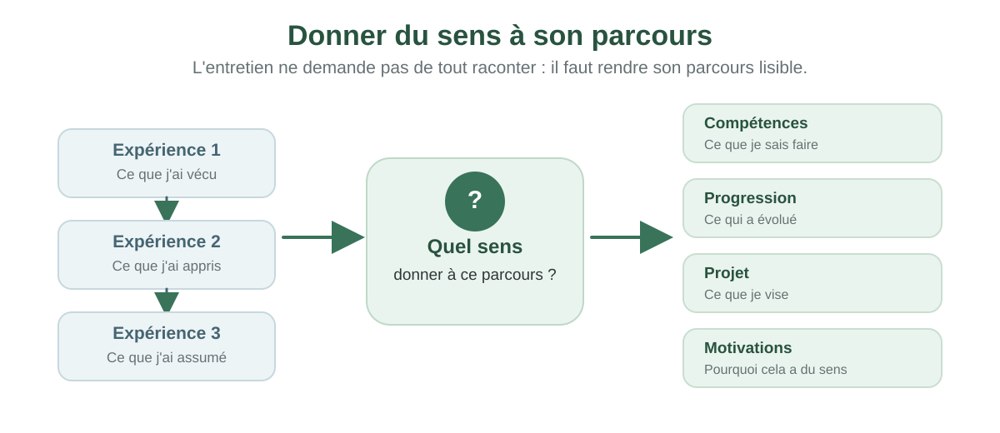
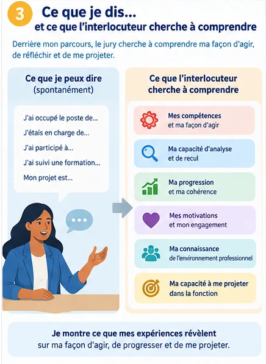
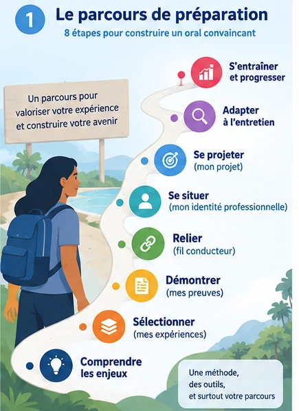
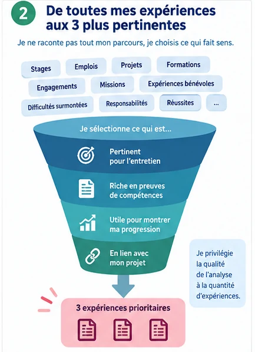
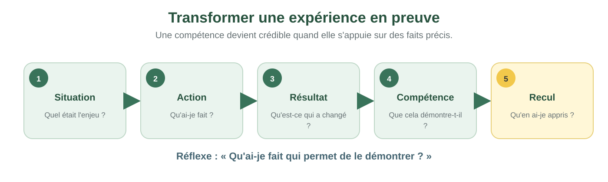
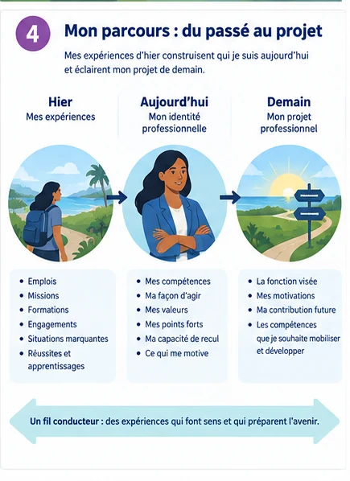
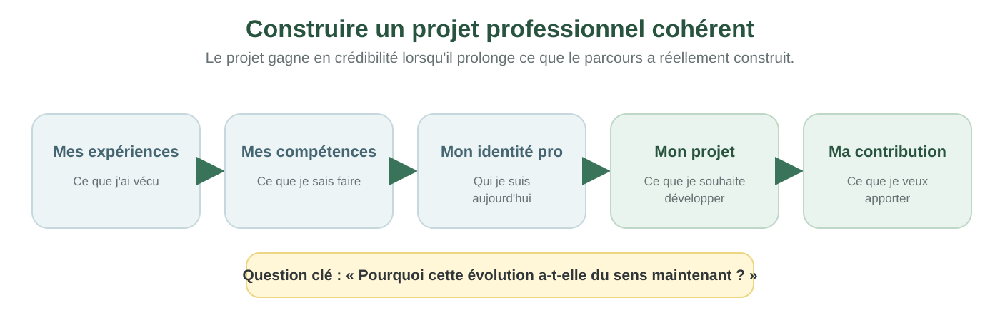
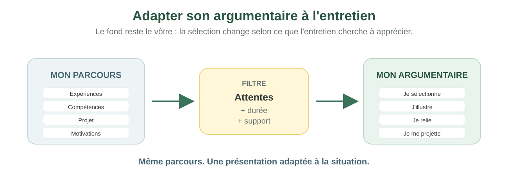
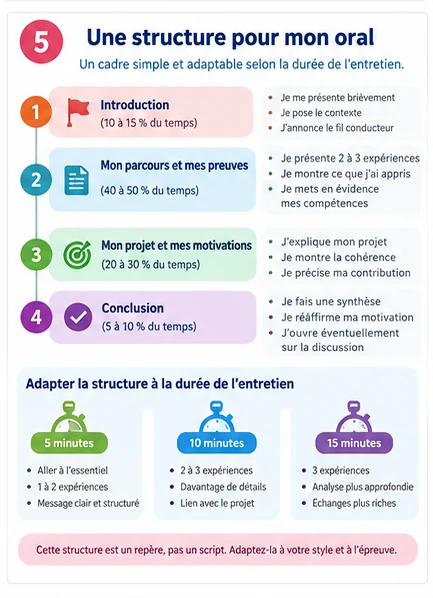
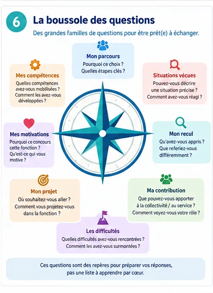

Parler de son parcours, ce n’est pas raconter son passé
Lors d’un entretien, votre interlocuteur ne cherche pas seulement à savoir ce que vous avez fait. Il cherche à comprendre ce que vos expériences ont construit et ce que vous êtes prêt à faire ensuite.
Pourquoi une simple chronologie de vos postes ne suffit pas, et ce que votre interlocuteur essaie réellement de saisir à travers votre parcours.
Ensuite : vous découvrirez les questions qui se cachent derrière la plupart des entretiens portant sur l’expérience professionnelle.

Ce que votre interlocuteur cherche à comprendre
Les questions peuvent être formulées de nombreuses façons. Mais derrière elles, votre interlocuteur cherche souvent à éclairer cinq dimensions.
Parcourez les 5 questions ci-dessous. Pour chacune, demandez-vous simplement : « Est-ce que je saurais y répondre aujourd’hui avec un exemple précis ? »
Il n’y a rien à saisir. L’objectif est de comprendre ce que votre présentation devra progressivement rendre visible.

Qui êtes-vous professionnellement aujourd’hui ?
Au-delà de votre intitulé de poste, quelles compétences et quels rôles vous caractérisent ?
Qu’avez-vous réellement appris de vos expériences ?
Qu’est-ce qui a évolué dans votre manière de travailler ?
Que savez-vous faire et comment pouvez-vous le démontrer ?
Quelles situations concrètes permettent de constater vos compétences ?
Pourquoi souhaitez-vous évoluer, changer ou progresser ?
Qu’est-ce qui vous attire réellement dans la suite envisagée ?
Pourquoi votre projet est-il cohérent avec votre parcours ?
Quels acquis rendent votre projet crédible et compréhensible ?
Le piège : confondre parcours et chronologie
Deux personnes répondent à la même question : « Pouvez-vous nous présenter votre parcours ? »
- Lisez les deux réponses.
- Choisissez celle qui aide le mieux à comprendre l’évolution professionnelle de la personne.
- Lisez le feedback avant de continuer.
Pourquoi cette activité ? Pour distinguer une succession de faits d’une présentation qui donne une lecture du parcours.
Ce qui fragilise souvent une présentation
Une présentation peut être exacte et sincère, tout en restant peu convaincante. Voici quatre pièges fréquents à éviter.
Lisez les quatre pièges. Repérez mentalement celui dans lequel vous pourriez le plus facilement tomber aujourd’hui.
Vous n’avez rien à déclarer. Ces repères vont simplement vous aider à comprendre pourquoi la méthode du module est construite comme elle l’est.
Tout raconter
À vouloir être exhaustif, vous utilisez le temps disponible sans vraiment mettre en valeur ce qui compte.
Affirmer sans démontrer
« Je suis autonome », « je sais manager », « je travaille en transversalité » restent des affirmations sans situation concrète.
Présenter un projet déconnecté
Un projet est plus crédible lorsque l’on comprend ce qui, dans le parcours, conduit à cette évolution.
Apprendre un texte
Une présentation récitée peut se fragiliser dès que l’entretien sort du scénario préparé.
Vous savez maintenant ce que vous allez chercher à construire
La suite du module va vous aider à passer d’un ensemble d’expériences à un argumentaire professionnel personnel, cohérent et adaptable.
Vous allez travailler sur votre propre parcours. Chaque étape prépare la suivante ; vous n’avez pas à produire un discours complet dès le départ.

Configurez l’entretien que vous préparez
Votre méthode restera la même, mais votre présentation doit tenir compte du contexte, du support éventuel et du temps disponible.
- Choisissez le contexte qui ressemble le plus à votre situation.
- Indiquez le document éventuel sur lequel l’entretien s’appuie.
- Indiquez la durée de présentation si vous la connaissez.
Pourquoi ? Ces informations permettront au module d’adapter les conseils de préparation et le chronomètre final.
1. Dans quel contexte allez-vous parler de votre expérience et de votre projet ?
Avant de commencer, où en êtes-vous ?
Ce rapide auto-positionnement ne mesure pas votre niveau professionnel. Il vous aide à repérer les points sur lesquels vous aurez le plus besoin de travailler.
Pour chacune des 5 affirmations, choisissez la réponse qui vous correspond aujourd’hui. Répondez spontanément : il n’y a ni note ni bonne réponse.
Quand vous aurez terminé : vous verrez les dimensions que le module va vous aider à consolider.
Passez votre parcours au scanner
Construisez d’abord votre propre liste d’expériences, puis choisissez celles qui seront les plus utiles pour votre entretien.
- Ajoutez au moins 3 expériences qui vous appartiennent.
- Pour chacune, indiquez brièvement ce que vous avez réellement fait et ce qu’elle peut montrer.
- Quand votre liste est prête, classez exactement 3 expériences dans « À développer dans ma présentation ».
Quand vous aurez terminé : le bouton « Continuer » s’activera et vous apprendrez à transformer ces expériences en preuves.

Ajoutez vos expériences
Saisissez au moins 3 expériences qui vous correspondent : poste, mission, projet, responsabilité particulière ou situation marquante.
Décrivez l’essentiel
Pour chacune, notez ce que vous avez réellement fait et ce qu’elle pourrait permettre de montrer. Inutile de recopier votre CV.
Choisissez vos 3 priorités
Lorsque vous aurez au moins 3 expériences, sélectionnez les 3 plus représentatives et utiles pour votre entretien.
Votre parcours commence ici
Ajoutez une première expérience de votre parcours professionnel. Si vous hésitez, pensez par exemple à :
un poste qui vous a fait progresser · un projet dont vous êtes fier · une situation où vous avez pris des responsabilités · une mission qui montre une expertise · une expérience qui explique votre projet actuel
Transformer une expérience en preuve
Vous avez choisi des expériences importantes. Il faut maintenant apprendre à expliquer ce qu’elles prouvent réellement.
- Lisez les 5 questions de la chaîne de la preuve.
- Observez l’exemple.
- Répondez au micro-défi en bas de l’écran.
Vous n’avez rien à rédiger ici. Quand le micro-défi est terminé, « Continuer » s’active et vous appliquez la méthode à votre propre expérience.
1. Comprenez la chaîne de la preuve
Pour qu’une expérience soit convaincante, votre interlocuteur doit pouvoir comprendre le contexte, votre contribution personnelle, ce qu’elle a produit, la compétence qu’elle révèle et ce que vous en avez appris.

Au lieu de : « Je sais travailler en transversalité. »
Une preuve commence plutôt par : « Pour harmoniser une procédure utilisée différemment par trois services, j’ai réuni les acteurs concernés, fait expliciter leurs contraintes et construit avec eux un circuit commun. »
L’interlocuteur peut alors constater la transversalité à partir d’une situation réelle, au lieu de devoir croire une simple affirmation.
Micro-défi
Vous dites : « Je sais travailler en transversalité. »
Quelle question devez-vous maintenant vous poser pour transformer cette affirmation en preuve ?
Mon laboratoire d’expérience
Analysez maintenant l’une de vos expériences prioritaires pour en faire une preuve claire et utilisable à l’oral.
- Travaillez sur votre expérience prioritaire n° 1 ; vous pourrez ensuite faire la même chose pour les deux autres.
- Répondez, dans l’ordre, aux 5 questions : situation, action, résultat, compétence et recul.
- À chaque étape, écrivez quelques phrases simples. Utilisez le conseil et l’exemple à droite si vous en avez besoin.
- À la dernière étape, cliquez sur « Voir ma synthèse ».
Quand vous aurez terminé : vous disposerez d’une fiche synthétique de cette expérience, à réutiliser pour votre préparation orale.
Expérience prioritaire
EXPÉRIENCE PRIORITAIRESoyez précis sur vos choix et votre rôle.
J’ai coordonné les échanges, proposé un calendrier et préparé les arbitrages nécessaires.
Repérez votre progression professionnelle
Progresser ne signifie pas seulement changer de poste ou de grade. Une progression peut concerner l’expertise, l’autonomie, la complexité, les responsabilités ou encore la capacité à travailler avec d’autres acteurs.
- Sélectionnez les dimensions qui ont réellement évolué dans votre parcours.
- Choisissez ensuite les 3 dimensions que vous souhaitez faire apparaître en priorité dans votre entretien.
- Écrivez en quelques lignes ce qui vous fait dire que vous avez progressé sur ces dimensions.
Le but : passer d’une succession d’expériences à une lecture de votre évolution professionnelle.
Trouvez le fil conducteur de votre parcours
Votre parcours n’a pas besoin d’avoir été planifié pour être cohérent. Le fil conducteur consiste à identifier, avec recul, ce qui relie réellement plusieurs étapes.
- Repérez ce qui revient dans plusieurs expériences : un type de contribution, une compétence, un domaine, une façon d’agir ou des responsabilités croissantes.
- Complétez les trois amorces ci-dessous.
- Terminez par une phrase courte qui résume votre fil conducteur.
À éviter : réécrire votre passé comme si tout avait été prévu depuis le début.
Qui êtes-vous professionnellement aujourd’hui ?
Avant de parler de votre futur, prenez un arrêt sur image. L’entretien doit permettre de comprendre le professionnel que vos expériences ont construit aujourd’hui.
- Répondez aux trois questions à partir de situations réellement observées dans votre travail.
- Évitez les qualités générales comme « motivé » ou « sérieux » : cherchez ce que l’on peut constater dans votre activité.
- Terminez par une phrase de synthèse.
Cette synthèse vous servira ensuite à construire votre introduction.

Construisez votre projet professionnel
Un projet solide relie ce que vous souhaitez, ce qui vous motive et ce que votre parcours rend crédible.
- Cliquez sur « Compléter » dans chacun des 4 blocs.
- Répondez avec vos propres mots ; quelques phrases suffisent.
- Quand les 4 blocs sont remplis, cliquez sur « Tester la solidité de mon projet ».
Le but : vérifier que votre projet est précis, cohérent avec votre parcours, motivé et orienté vers une contribution. Il n’y a pas de « bonne réponse » attendue.

Un projet professionnel cohérent vous permet de convaincre par votre constance et votre clarté.
Expliquez vos motivations
Votre projet indique où vous souhaitez aller. Vos motivations permettent de comprendre pourquoi cette évolution a du sens pour vous.
- Répondez aux quatre questions avec des idées concrètes.
- Reliez vos motivations au contenu des fonctions ou de l’évolution recherchée.
- Ne cherchez pas à masquer les motivations personnelles : approfondissez-les pour en faire un argument professionnel.
Le but : dépasser une motivation limitée à « réussir l’examen », « changer de grade » ou « changer de poste ».
Regardez maintenant votre parcours du point de vue de l’entretien
Jusqu’ici, vous avez travaillé sur vous. Il faut maintenant vérifier que votre argumentaire répond aussi à ce que votre interlocuteur cherche à comprendre.
- Notez jusqu’à 3 attentes importantes de l’entretien ou des fonctions visées.
- Pour chacune, indiquez ce que votre parcours permet déjà de démontrer.
- Repérez les attentes pour lesquelles vous devrez préparer un exemple plus solide.
Si vous ne connaissez pas encore les attentes précises : formulez ce que vous pensez devoir montrer, puis vérifiez-le plus tard dans la documentation de l’entretien.

Construisez l’ossature de votre présentation
Vous n’allez pas écrire un texte à réciter. Vous allez préparer quelques repères qui vous permettront de parler avec structure et souplesse.
- Préparez votre introduction en donnant une clé de lecture de votre parcours.
- Décidez de l’ordre dans lequel vous mobiliserez vos expériences.
- Préparez la manière dont vous relierez votre parcours à votre projet et à vos motivations.
- Écrivez seulement vos idées-clés, pas un discours complet.

Préparez les questions cachées dans vos expériences
Votre objectif n’est pas d’apprendre toutes les réponses possibles, mais de connaître suffisamment bien vos expériences pour pouvoir les analyser sous plusieurs angles.
- Pour chacune de vos trois expériences prioritaires, imaginez une question qui pourrait vous mettre en difficulté.
- Notez ensuite les faits dont vous auriez besoin pour y répondre.
- Utilisez les familles de questions proposées comme aide.
Familles utiles : rôle précis, difficulté, décision, résultat, compétence, recul, environnement, projection, motivation.

Défi méthodologique
Avant la simulation, vérifiez que les principaux réflexes de préparation sont bien installés.
- Répondez à 8 questions courtes.
- Lisez le feedback après chaque réponse.
- À la fin, repérez les principes à revoir si nécessaire.
Important : ce score mesure votre compréhension de la méthode, pas la qualité de votre parcours ni votre aptitude à réussir un entretien.
Derniers repères avant la simulation
Vous allez maintenant mobiliser l’ensemble de votre préparation à voix haute, comme en entretien.
- Relisez une dernière fois vos expériences prioritaires et votre projet.
- Choisissez la durée de votre présentation.
- Quand vous êtes prêt, cliquez sur « Je suis prêt ».
Attention : dès que vous lancez la simulation, vos notes disparaissent et le chronomètre démarre. Parlez à voix haute ; ne cherchez pas à réciter un texte.
Mes expériences prioritaires
Mon projet
Repartez avec vos outils de préparation
Votre travail dans le module est terminé. Conservez maintenant les ressources qui vous seront utiles pour poursuivre vos entraînements.
- Télécharger votre dossier personnel, qui reprend tout ce que vous avez écrit.
- Ouvrir ou télécharger la fiche réflexe en 2 pages pour vos prochains entraînements.
- Consulter les crédits et références du module.
Conseil : votre dossier personnel est une base de travail. Ne l’apprenez pas mot pour mot ; utilisez-le pour retrouver vos faits, vos exemples et vos idées-clés.
Mon dossier personnel de préparation
Il reprend les expériences, preuves, compétences, fil conducteur, projet, motivations, trame orale, questions et priorités que vous avez saisis.
Ma fiche réflexe
Deux pages pour retrouver rapidement la méthode : sélectionner, démontrer, relier, se projeter, adapter et s’entraîner.
Conception et réalisation
Institut de formation à l’administration publique (IFAP) de Nouvelle-Calédonie.
Conception pédagogique, scénarisation, design d’expérience et réalisation du module.
Références de contextualisation
Les contextualisations relatives aux concours, examens professionnels, sélections professionnelles et autres dispositifs s’appuient sur les programmes, méthodologies et documents publiés par la direction des ressources humaines et de la fonction publique de Nouvelle-Calédonie (DRHFPNC), ainsi que sur le référentiel interne IFAP des épreuves.
À savoir
Les conseils proposés dans ce module constituent des repères méthodologiques de préparation. Lorsqu’une règle particulière est fixée par le texte, le programme ou la méthodologie de l’entretien préparé, cette règle prévaut. Les informations propres à une épreuve doivent être vérifiées dans les références officielles en vigueur.
Données personnelles de préparation
Les expériences, analyses, projets, motivations et autres contenus détaillés saisis dans le carnet sont conservés localement dans le navigateur dans cette version du module. Ils ne sont pas transmis au jury.
Illustrations et ressources graphiques
Illustrations pédagogiques et interface conçues pour l’IFAP. Les schémas sont utilisés comme supports d’apprentissage et non comme éléments décoratifs.
Version
Module « Valoriser son expérience et présenter son projet professionnel » - version de conception, septembre 2026.
Référentiel interne de conception : « Tableau exhaustif des épreuves - Fonction publique de Nouvelle-Calédonie - IFAP Simulation JuryNC - version 6 - 2025 ». Les données propres aux épreuves sont à confronter aux publications officielles en vigueur avant diffusion.